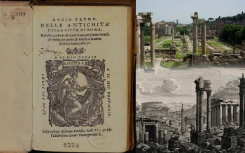

<div class="con10t-page container">
    <div class="con10t-row">
        <h1>iDAI.bookbrowser</h1>
        <p><a href="http://arachne.dainst.org/category/?c=B%C3%BCcher">Go to the
            iDAI.Bookbrowser</a></p>
        <p><a con10t-search-catalog="">Browse Books</a></p>
        <p></p>
        <p>The iDAI.bookbrowser integrates documents in the object structure of
            Arachne, providing direct links between “real world” objects and their
            textual descriptions. It also frees books from their idolisation and
            contextualizes them in to their cultural environments.</p>
        <p>The important component of the iDAI.bookbrowser are digitized prints from
            the 16th to 18th centuries, currently numbering about 300. Every heading is
            successively verified in the ZENON DAI and linked to its record in the
            iDAI.bookbrowser. These books belong to the holdings of the German
            Archaeological Institute in Rome (DAI), the Research Archive for Ancient
            Sculpture (FA) at the Archaeological Institute of the University of Cologne,
            the Cologne University Library and the Winckelmann-Institute at Stendal.</p>
        <p>Further information (in German):</p>
        <p>Als weitere Bestandskategorie werden thematisch zusammenhängende Konvolute
            aufbereitet und innerhalb von Arachne kontextualisiert: etwa die
            landeskundlichen Fotoalben des Barons Max von Oppenheim oder aber die
            handschriftlichen Inventarverzeichnisse der Fotothek des Deutschen
            Archäologischen Institutes in Rom.</p>
        <p>Der iDAI.Bookbrowser unterstützt über seine OAI-Schnittstelle den
            METS-Metadatenstandard. Seine Programmierung erfolgte am Forschungsarchiv für
            Antike Plastik am Archäologischen Institut der Universität zu Köln. Die
            Finanzierung übernahmen das Deutsche Archäologische Institut in Berlin sowie
            die Philosophische Fakultät der Universität zu Köln.</p>
    </div>
</div>